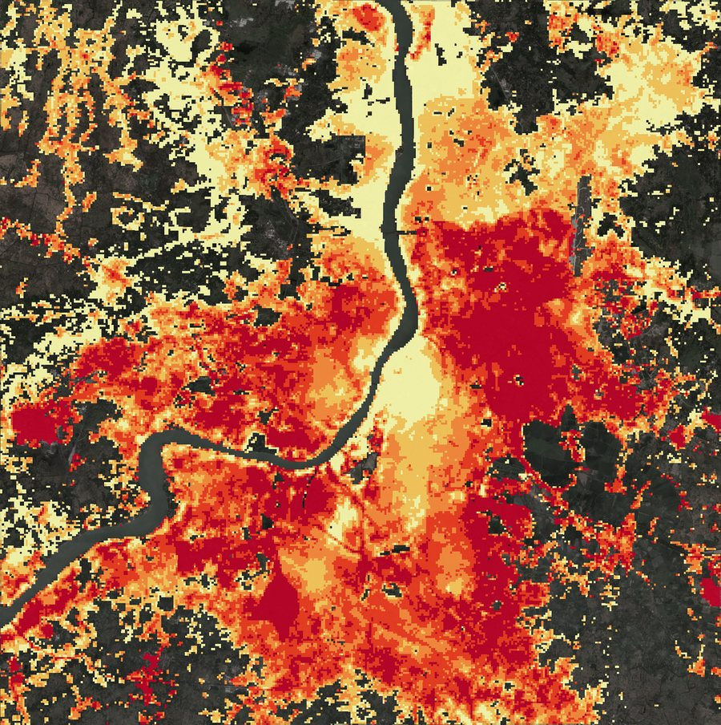

22.43–22.76° N · 88.16–88.52° E · 36 × 36 km · 2017–2025
How Kolkata grew onto its floodplain
Urban growth and flood vulnerability of the Kolkata–Howrah–Hooghly floodplain, 2017–2025. Land cover mapped at 3 m from PlanetScope, flood hazard from radar and terrain, and flood risk for 17 million people, all built in Google Earth Engine.

Relative flood risk, 100 m grid · darkest red = very high
+158 km²built-up land added (95% range 105–211)
54% vs 33%new growth vs the old city on high-hazard land
7.3 Mpeople on high or very high hazard land
11.0 Mpeople in the two highest risk classes
Abhay Chauhan (25113004), Abhinav Parashar (25113007), Anahad Rakhra (25113018), Durgesh Kushwaha (25113046). Supervisor: Prof. Siddhartha Khare. Department of Civil Engineering, IIT Roorkee.
The square covers about 1,296 km² centred on the Kolkata–Howrah core. Kolkata and Howrah face each other across the river, with Salt Lake, New Town and the East Kolkata Wetlands to the east. Beyond the core lie farmland, tree-covered villages and ponds.
A fixed square gives every date the same footprint and captures the rural-to-urban gradient on all sides. Distances in this atlas are measured from BBD Bagh, the old centre.
02Phases 1–4 · Land cover
Four land-cover maps at 3 m
PlanetScope images from Jan–Feb 2017, Feb 2020, Feb 2023 and Dec 2025 were cloud-masked and placed on one UTM grid. A Random Forest classifier, trained on hand-drawn polygons, mapped five classes at each date using the four bands, NDVI, NDWI, brightness and texture.
84.5–89.6%overall accuracy on held-out test polygons (kappa 0.81–0.87)
The map shows 2017 on the left and December 2025 on the right. Drag the handle to compare, or switch years in the map panel.
03Phase 5 · Urban growth
Built-up land grew by about 18 km² a year
Comparing the four maps pixel by pixel gave 278 km² of growth. Most of it was false: harvested fields and bare soil that look like concrete without short-wave infrared. Growth was therefore measured from 180 blindly labelled reference points, with the map used only to place them.
158 km²sample-based estimate (95% range 105–211)
278 km²map-to-map comparison, about three-quarters too high
Built-up area, sample-based (km²)
From 18% to 30% of the square. UEII 1.38% per year, graded fast. Dynamic World agrees for 2017–2023 (134 against 122 km²).
The growth map is still useful for direction: most new built-up land lies 8–20 km from BBD Bagh, and Shannon’s entropy rose from 0.80 to 0.92. The city is spreading outward.
04Phase 6 · Radar flood history
Observed floods on open land were small and episodic
Sentinel-1 radar images from nine monsoons (2017–2025) were compared with dry-season references on the same satellite track. Permanent water was removed with JRC Global Surface Water.
6.3 km²flooded in at least one monsoon (0.5% of the area)
4.0 km²in the peak year, 2021, the year of the South Bengal floods
Radar cannot see water between buildings, so urban waterlogging is missed. The hazard index in the next step therefore leans on terrain.
05Phase 6 · Flood hazard index
The natural levees are the safest ground
Six factors were scored 0–1 and weighted by the Analytic Hierarchy Process (consistency ratio 0.012).
45%of land (535 km²) is high or very high hazard
0.79–0.80AUC of the terrain index against radar-observed floods
The lowest hazard follows narrow strips along both banks: the river’s natural levees, where old Kolkata and Howrah were built. The highest lies around the wetlands, on the southern fringe and in a basin west of Howrah. At least 96.5% of land stays within one class when the weights change.
06Phase 7 · Growth meets hazard
New growth sits more often on high-hazard land
Each reference point carries both what really happened and the hazard class of its cell. Weighting the points by hazard group and resampling them 5,000 times gives these shares of land in high or very high hazard:
Bars show 95% bootstrap intervals. The gap (+21 points) is above zero in 92% of resamples: strongly indicated, not conclusive with 31 points on new growth.
≈ 87 km²of new built-up land on high or very high hazard (range 49–128), about 10 km² a year
The old city occupies the levees. New growth has nowhere to go but the lower ground behind them: the back-swamps, the fringe of the wetlands and the basin west of Howrah.
07Phase 8 · Who is at risk
Risk peaks in a belt 5–15 km from the centre
Relative risk combines hazard, exposure (population and built-up share, GHSL 2025) and vulnerability (crowding and the Meta Relative Wealth Index) on a 100 m grid. The five classes are equal fifths of the populated land.
7.3 Mof 17.3 million people live on high or very high hazard land
11.0 Mlive in the two highest risk classes (9–12 M across tests)
Residents in high or very high risk cells, by distance from BBD Bagh
Second row: people living in each ring. The old centre ranks low because it sits on the levees and scores as relatively wealthy. Vulnerability, built from gridded proxies, is the least certain part of the index.
Click the map to read every layer at that spot
⇔
Want to compute it live?The Earth Engine app runs on the project’s data: click any point for its values, draw an area for its statistics, or pick a ring around BBD Bagh.
About 158 km² of new built-up land in under nine years, 18 km² a year. The built-up share rose from 18% to 30%, spreading outward.
Method
Comparing classified maps overstated growth by about three-quarters. A blind reference sample, a temporal-consistency rule and Dynamic World exposed and corrected it.
Hazard
54% of new built-up land lies in high or very high hazard, against 33% of the old city on the levees.
Risk
7.3 million people live on high-hazard land. The dense inner suburbs 5–15 km from BBD Bagh are the priority for drainage and emergency planning.
Limitations
No short-wave infrared
PlanetScope’s four bands confuse bare soil with concrete, the main source of false built-up.
Mixed seasons
Three Jan–Feb images and one from December. Crops and ponds differ, so wetland change is not reliable.
Small reference sample
180 points labelled by one person without field visits. Each period is known only to about ±30 km².
Few points on new growth
Only 31. About 90 more would halve the interval on the new-versus-old gap.
Proxy vulnerability
Gridded crowding and a 2.4 km wealth index stand in for ward census data. Dropping the wealth index moves a third of risk classes.
Relative, not absolute
Risk classes rank cells within the square. They count residents, not workers, and do not estimate damage.
Supervisor: Prof. Siddhartha Khare, Department of Civil Engineering, IIT Roorkee.
Data
PlanetScope 3 m (Planet Labs, research licence; imagery not shown), Sentinel-1 and Sentinel-2 (Copernicus), FABDEM, MERIT Hydro, JRC Global Surface Water, Dynamic World, GHSL, WorldPop, Meta Relative Wealth Index.
Reading the maps
Areas quoted in the text are sample-based. Map layers of growth are indicative. Map layers here are about 22 m per pixel; the analysis ran at 3 m, 10 m, 30 m and 100 m. Click readouts are read from these images.